Experiment
- Cyclo-(Gly)6 Synthesis
Materials
- Methanol (Beijing Chemical Works);
- CH2Cl2 (Dichloromethane, DCM, Beijing Chemical Works);
- DEP: 20% Piperidine in DMF (v/v) ;
- DIPEA: N, N-disopropylethylamine (Aladdin);
- DMF: N, N-dimethylamino (Beijing Chemical Works);
- Fmoc-Gly-OH Â (GL Biochem (Shanghai) Corporation. Ltd.);
- Hexahydropyridine (Beijing Chemical Works);
- HOBt: 1-hydroxybenzotriazole (GL Biochem (Shanghai) Corporation. Ltd.);
- NMM: N-methylmorpholine (GL Biochem (Shanghai) Corporation. Ltd.);
- PyBOP: benzotrizaol-a-yloxytris (pyrrolidino) phosphonium hexafluorophosphate) (GL Biochem (Shanghai) Corporation. Ltd.);
- Silylating reagent:(CH2Cl2: SiMe2Cl2=4:1);
May 19th
Pretreatment for synthesizing peptide using Fmoc Solid Phase Peptide Synthesis (SPPS)
- Silylating reagent was added to a reaction vessel, stood for 2 hours.
- Then the reaction vessel was dried at 140â„?for 1.5 hours.
- 0.13978g 2-Chlorotrityl Chloride Resin was swollen in DCM (10ml) for 2 hours and then replaced by DMF overnight.
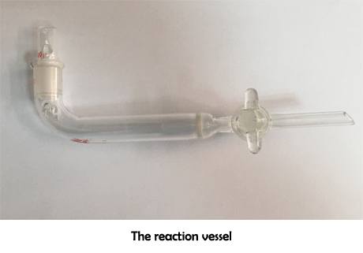
May 20th
Attachment of the first residue
- 0.09099g Fmoc-Gly-OH (3 eq.) was added to the reaction vessel at room temperature and DIPEA (6 eq.) was added.
- Sufficient DMF was added to cover resin with three-time bed volume.
- The reaction vessel was agitated at 25°C and 180 rpm/min for 2h.
- The complex was washed with DMF six times.
- The 4 steps mentioned above were repeated (0.09500g Fmoc-Gly-OH).
- 0.35mL DIPEA, 0.70mL MeOH and 5.95mL DMF was added to the reaction vessel and agitated for 25 minutes to block the resin.
- The complex was washed with DMF six times.
- The 2 steps mentioned above were repeated.
Deprotection of the first residue (Step 1)
- 10 mL DEP was added to the reaction vessel to cover the resin.
- The reaction vessel was agitated gently for 30 min. Reagent was drained off.
- The resin was washed with DMF six times.
Resin tests
The presence or absence of the free amino groups was tested by Kaiser test as followed.
- A few resin beads were transferred to a 1.5mL micro tube and 2 drops of 5% ninhydrin and 80% phenol was added to ethanol (w/v).
- The reagents were well mixed and reacted under 120â„?for 4-6 minutes.
- The presence of resin-bound free amine is indicated by blue resin beads.
Attachment (Step 2) and deprotection of the second residue
- 0.09057g Fmoc-Gly-OH, 0.04246g HOBt, 0.15621g PyBOP and 70μL NMM were added to the reaction vessel.
- 10mL DMF was added and the resin was agitated for 90 minutes. (180r/min)
- The complex was washed with DMF six times.
- Resin test: Yellow �
- DEP was added to remove the Fmoc protecting group for 30 minutes.
- The complex was washed with DMF six times.
- Resin test: Blue �
Attachment of the third residue
- 0.09281g Fmoc-Gly-OH, 0.04090g HOBt, 0.15632g PyBOP and 70μL NMM were added to the reaction vessel.
- The third residue was coupled as step 2.
- Resin test: Kind of blue ×.
Attachment and deprotection of the third residue
- 0.09133g Fmoc-Gly-OH, 0.04112g HOBt, 0.15690g PyBOP and 70μL NMM were added to the reaction vessel.
- The third residue was coupled as step 2 again.
- Resin test: Yellow �
- DEP was added to remove the Fmoc protecting group for 30 minutes.
- The complex was washed with DMF six times.
- Resin test: Blue �
May 21st
Attachment of the fourth residue
- 0.09077g Fmoc-Gly-OH, 0.04089g HOBt, 0.15908g PyBOP and 70μL NMM were added to the reaction vessel.
- Step 2 was repeated and the fourth residue was coupled.
- Resin tests: ×.
Attachment and deprotection of the fourth residue
- 0.09187g Fmoc-Gly-OH, 0.04217g HOBt, 0.15906g PyBOP and 70μL NMM were added to the reaction vessel.
- Step 2 was repeated and the fourth residue was coupled again.
- Resin test: �
Attachment and deprotection of the fifth residue
- 0.09365g Fmoc-Gly-OH, 0.04123g HOBt, 0.15917g PyBOP and 70μL NMM was added to the reaction vessel.
- 0.09365g Fmoc-Gly-OH, 0.04123g HOBt, 0.15917g PyBOP and 70μL NMM was a to the reaction vessel.
- Step 2 was repeated and the fifth residue was coupled.
- Resin test: �
Attachment of the sixth residue
- 0.09453g Fmoc-Gly-OH, 0.04433g HOBt and 60μL NMM was added to the reaction vessle.
- Step 2 was repeated and the sixth residue was coupled.
- Resin test: �
- The resin was washed with DMF (six times), DCM (six times) and MeOH (six times).
- The resin was dried under vacuum overnight.
May 23rd
Cleavage of the linear precursor (Step 3)
- 10 mL cleavage reagent (9.75mL TFA and 250μL water TFA/TIS/water/DCM 1: 2.5: 2.5: 94) was added to the reaction vessel.
- The resin was agitated under room temperature for 30 min.
- The resin was removed by filtration under reduced pressure through the reaction vessel and was washed twice with DCM.
- The filtrates were dropped into cold diethyl ether. The supernatant solvent was decanted and the solid was washed with cold diethyl ether twice.
- The raw product was dissolved in little methanol and 30ml water was added.
- The mixture was freeze-dried in vacuum. The white solid product was used to next step without further purification.
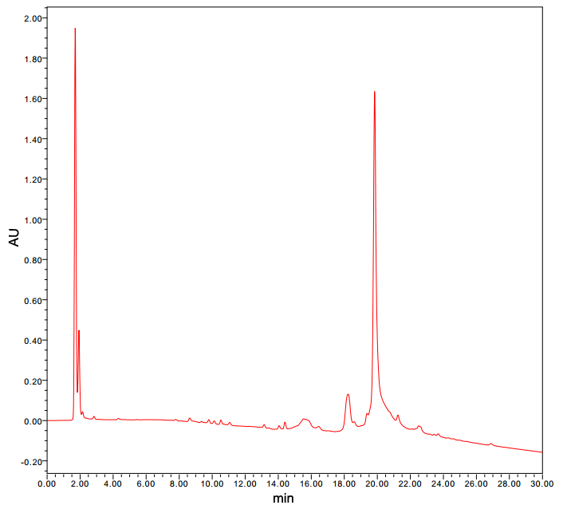
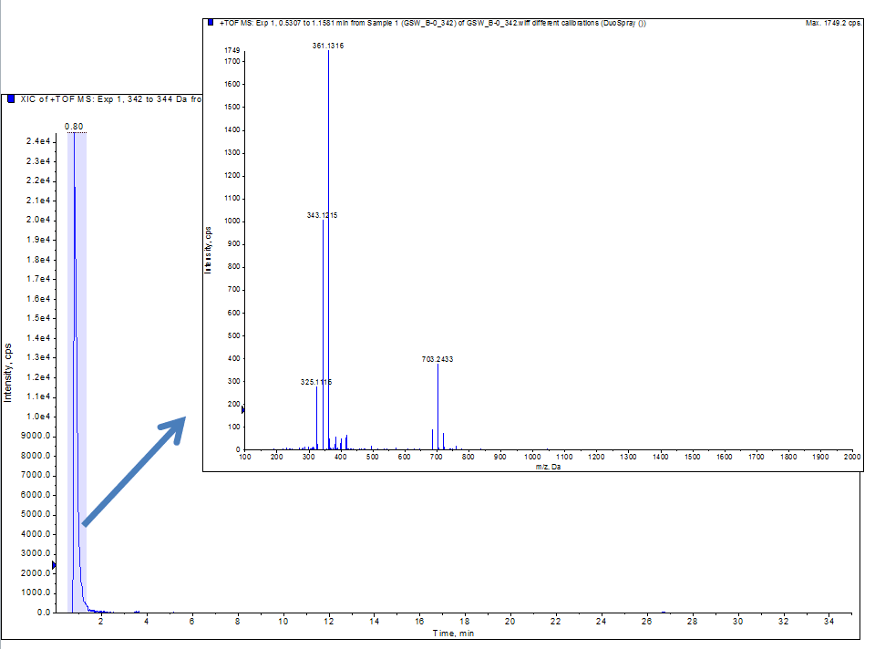
May 31st-June 1st
Cyclizing of the linear peptide Gly6
- The linear precursor (0.02764g, 76.78μmol) was dissolved in 90mL DMF. The solution was cooled to 0 �in an ice bath.
- 119.83mg PyBOP (230.34μmol)was dissolved in 30mL DMF; The liquid was cooled to 0 �and was slowly added to the solution mixture while stirring at �
- 79.44μL DIPEA was added to the mixture slowly.
- The reaction mixture was left to be stirred for 6 hours at 0 â„?and then at room temperature for 2 days.
- DMF was removed by vacuum distillation at 55â„?
- The crude product was purified by HPLC on C18 reversed-phase silica gel (20% to 90% acetonitrile with 0.1% TFS in 45min).
June 12th
Vacuum distillation
- DMF was removed by vacuum distillation at 55â„?
Experiment
- Cyclo-(L-Asp-D-Ala)3 Synthesis
Materials
- CH2Cl2 (Dichloromethane, DCM, Beijing Chemical Works);
- DEP: 20% Piperidine in DMF (v/v) ;
- DIPEA: N, N-disopropylethylamine (Aladdin);
- DMF: N, N-dimethylamino (Beijing Chemical Works);
- Fmoc-D-Ala-OH GL (Biochemistry (Shanghai) LTD);
- Fmoc-L-Asp(-OtBu)-OH;
- Hexahydropyridine (Beijing Chemical Works);
- HOBt: 1-hydroxybenzotriazole (GL Biochem (Shanghai) Corporation. Ltd.);
- Ninhydrin; (A: 5% (ω/V) 0.5 10mL Ninhydrin-ethanol solution: B: 80% (ω/V) phenol-ethanol solution);
- NMM: N-methylmorpholine (GL Biochem (Shanghai) Corporation. Ltd.);
- PyBOP: Benzotrizaol-a-yloxytris (pyrrolidino) phosphonium (Lot NO: 150106-00804) ;
- Silylating reagent: (CH2Cl2: SiMe2Cl2=4: 1);
July 18th
Pretreatment
- 1.40040g 2-Chlorotrityl Chloride Resin was added.
- Dichloromethane was added to the resin and stood overnight.
- Silylating reagent was added to the reaction vessel and the reaction vessel stood overnight.
- The complex was dried at 140â„?for 1.5 hours.
July 19th
Attachment of the first residue (D-Ala) (Twice)
- The resin was added to the reaction vessel.
- 0.96g Fmoc-D-Ala-OH, dichloromethane and 330μL DIPEA was added.
- The reaction vessel was agitated for 10 minutes.
- 660μL DIPEA was added and the reaction vessel was agitated for 2 hours.
- A blocking agent was prepared with 5mL DIPEA, 10mL MeOH and 85mL DCM.
- The reaction vessel was washed with dichloromethane six times.
- The six steps mentioned above were repeated.
- The reaction vessel was washed with dichloromethane six times.
- 11mL blocking agent was added and the reaction vessel was agitated for 40 minutes (160r/min).
- The liquid was discarded and 10.5mL blocking agent was added to the reaction vessel.
- The reaction vessel was agitated for 30 minutes.
Deprotection of the first residue (D-Ala)
- DEP was added to remove the Fmoc protecting group for 30 minutes.
- Resin test: Blue �
July 20th
Attachment and deprotection of the second residue (L-Asp)
- 1.26g Fmoc-L-Asp(-OtBu)-OH, 0.42609g HOBt, 1.56956g PyBOP and 700μL NMM was added to the reaction vessel.
- 10mL DMF was added and the resin was agitated for 10 minutes artificially and then agitated for 90 minutes (180r/min).
- The resin was washed with DMF six times.
- Resin test: Yellow �
- DEP was added to remove the Fmoc protecting group for 30 minutes (180r/min).
- Resin test: Blue �
Attachment and deprotection of the third residue (D-Ala)
- 0.96520g Fmoc-D-Ala-OH, 0.42793g HOBt, 1.56673g PyBOP and 700μL NMM was added to the reaction vessel.
- The third residue was coupled as step 2.
- Resin test: Yellow �
- DEP was added to remove the Fmoc protecting group for 30 minutes.
- Resin test: Blue �
Attachment and deprotection of the fourth residue (L-Asp)
- 1.28301g Fmoc-L-Asp(-OtBu)-OH 0.42142g HOBt, 1.56052g PyBOP and 700μL NMM was added to the reaction vessel.
- The fourth residue was coupled as step 2.
- Resin test: Yellow �
- DEP was added to remove the Fmoc protecting group for 30 minutes.
- Resin test: Blue �
Attachment and deprotection of the fifth residue (D-Ala)
- 0.96848g Fmoc-D-Ala-OH, 0.42521g HOBt, 1.56310g PyBOP and 700μL NMM was added to the reaction vessel.
- The fifth residue was coupled as step 2.
- Resin test: Yellow �
- DEP was added to remove the Fmoc protecting group for 30 minutes.
- Resin test: Blue �
Attachment and deprotection of the sixth residue (L-Asp)
- 1.28647g Fmoc-L-Asp(-OtBu)-OH, 0.42283g HOBt, 1.56g PyBOP and 700μL NMM was added to the reaction vessel.
- The sixth residue was coupled as step 2.
- The resin was tested with ninhydrin reaction: Yellow.
- Resin test: Yellow �
- DEP was added to remove the Fmoc protecting group for 30 minutes.
- Resin test: Blue �
Cleavage of the linear precursor
- The resin was washed with MeOH six times and dried under vacuum.
- A small amount of resin was added to a flask and 1% TFA (Solvent: CH2Cl2) was added.
- The resin and solution were added to cold ethylether.
- The mixture was centrifuged under 6000r/min at 4â„?for 5 minutes.
MS Analysis
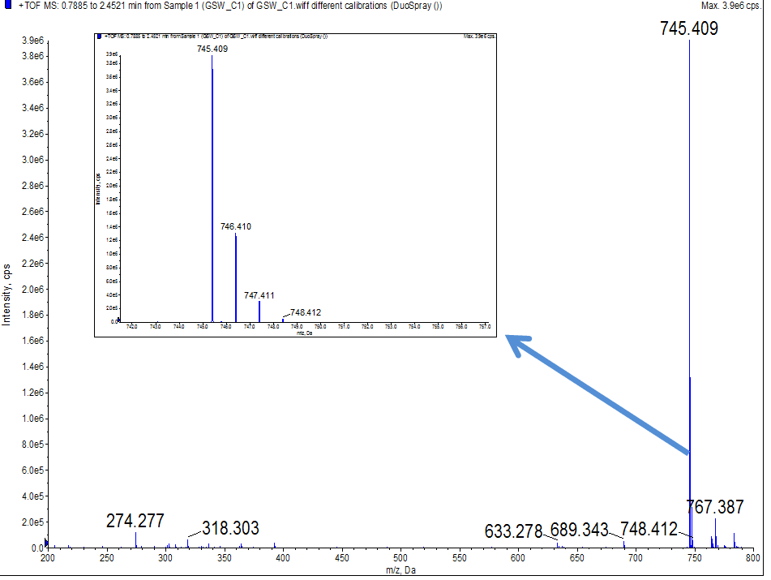
July 21st
- 0.05043g Resin-Cyclo-(L-Asp-D-Ala)3 was added to be cleaved with 0.75mL cleaving reagent (TFA/TIS/water/DCM 1: 2.5: 2.5: 94) as a condition test.
- The cyclic peptide was cleaved for 45 minutes under room temperature.
July 24th
Characterization of cyclo-(DG)3+ ethylenediamine
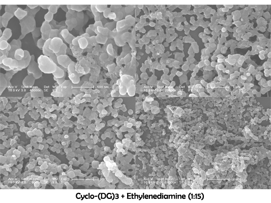
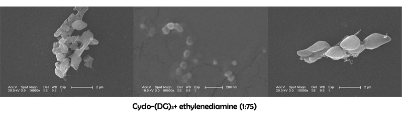
August 2nd
Cyclo-(Asp-Gly)3 assembling and purification
- Hexamethylendiamine as the linker (-COOH:-NH2=1:10)
- 0.5mg Cyclo-(Asp-Gly)3, 2mg hexamethylendiamine, 0.0312g PyBOP, 4.029μL triethylamine and 5mL DMF were added to a flask.
- The flask was sealed and the liquid was stirred for one day.
- Dialysis: One day.
- Hexamethylendiamine as the linker (-COOH:-NH2=1:50)
- 0.5mg Cyclo-(Asp-Gly)3, 8.5mg hexamethylendiamine, 0.1544g PyBOP, 4.029μL triethylamine and 5mL DMF were added to a flask.
- The flask was sealed and the liquid was stirred for one day.
- Dialysis: One day.
| Cyclo-(Asp-Gly)3 | DMF | Cyclo-(Asp-Gly)3 | Triethylamine | Hexamethylendiamine | PyBOP |
| -COOH:-NH2=1:10 | 5mL | 0.5mg | 4.029μL | 2mg | 0.0312g |
| -COOH:-NH2=1:50 | 8.5mg | 0.1544g |
August 3rd
- 1.23686g Resin-Cyclo-(L-Asp-D-Ala)3 was added to be cleaved with 17.50mL cleaving reagent (Prepared with 4mL TFE, 16mL DCM).
- The mixture was stirred for 45 minutes.
Cyclo-(Asp-Pro)3 assembling and purification
- ethylenediamine as the linker (-COOH:-NH2=1:50)
- 3.27μL triethylamine, 0.5mg Cyclo-(Asp-Pro)3, 3.543mg ethylenediamine, 122.71mg PyBOP and 3.841 mL DMF were added to a flask.
- The flask was sealed and the liquid was stirred for 2 days.
- Dialysis: 2 days.
- Hexamethylendiamine as the linker (-COOH:-NH2=1:50)
- 3.27μL triethylamine, 0.5mg Cyclo-(Asp-Pro)3, 6.852mg hexamethylendiamine, 122.71mg PyBOP and 3.841 mL DMF were added to a flask.
- The flask was sealed and the liquid was stirred for 2 days.
- Dialysis: 2 days.
| Cyclo-(Asp-Pro)3 | DMF | Cyclo-(Asp-Pro)3 | Triethylamine | PyBOP | Linker |
| -COOH:-NH2=1:50 | 3.841mL | 0.5mg | 3.27μL | 122.71mg | 3.543mg ethylenediamine |
| -COOH:-NH2=1:50 | 6.852mg hexamethylendiamine |
August 7th
Cyclo-(Asp-Pro)3 Synthesis
- Cyclo-(Asp-Pro)3 was purchased from SynPeptide Co. Ltd.(Shanghai, China)
HPLC analysis of Cyclo-(Asp-Pro)3
- Pump A: 0.1% Trifluoroacetic in 100% Water
- Pump B: 0.1% Trifluoroacetic in 100% Acetonirtrile
- Total Flow: 1ml/min
- Wavelength: 214nm
- Analytial column type: SHIMADZU Inertsil ODS-SP (4.6*250mm*5um)
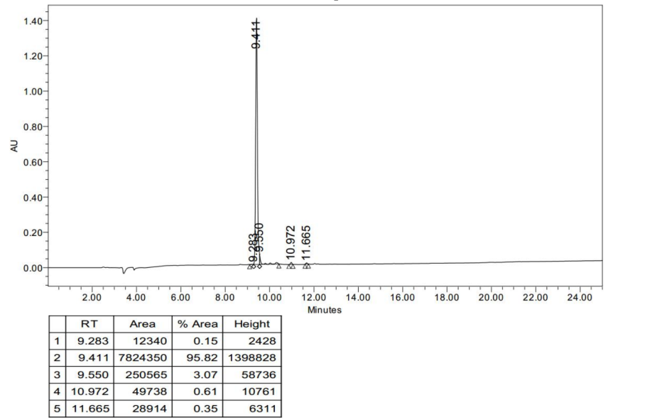
MS analysis of Cyclo-(Asp-Pro)3
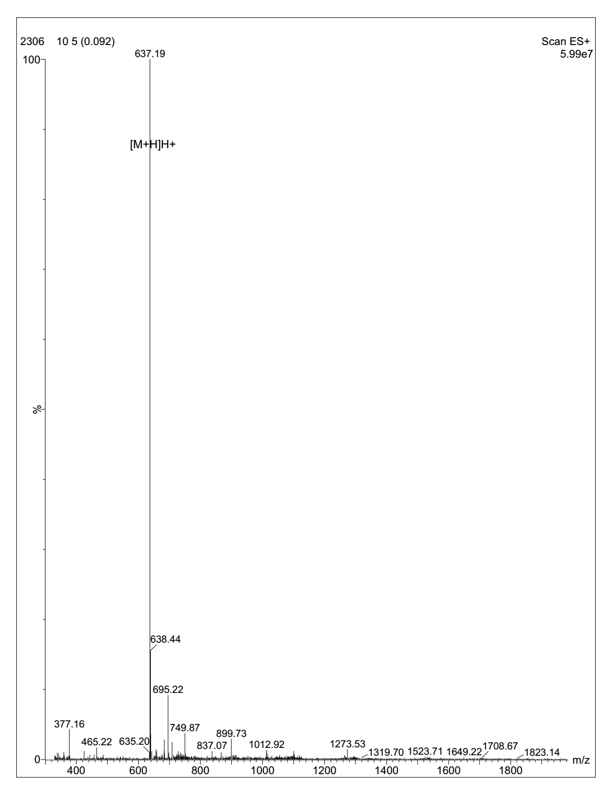
August 8th
Cyclo-(Arg-Pro)6 assembling and purification
- Adipic acid as the linker (-CN3H4:-COOH=1:10)
- 0.5mg cyclo-(Arg-Pro)6, 1.443mg adipic acid and 1.646mL DMF were added to a flask.
- The flask was sealed and the liquid was stirred for 2 days.
- Adipic acid as the linker (-CN3H4:-COOH=1:50)
- 0.5mg cyclo-(Arg-Pro)6, 7.216mg adipic acid and 1.646mL DMF were added to a flask.
- The flask was sealed and the liquid was stirred for 2 days.
| Cyclo-(Arg-Pro)6 | DMF | Cyclo-(Arg-Pro)6 | Adipic acid |
| -CN3H4:-COOH=1:10 | 1.646mL | 0.5mg | 1.443mg |
| -CN3H4:-COOH=1:50 | 7.216mg |
August 13th
Cyclo-(Arg-Pro)3 Synthesis
- Cyclo-(Arg-Pro)3 was purchased from ChinaPeptides Co.,Ltd.(Shanghai, China) (Received: August 29th)
HPLC analysis of Cyclo-(Arg-Pro)6
- Measurement: Peak Area
- Run Time: 11min
- Calculation Type: Percent
- Wavelength: 220nm
- Flow Rate: 1ml/min
- Inj.Vol: 10μL
- Buffer A: 0.1% TFA in water
- Buffer B: 0.1% TFA in Acetonitrile
- Column: Kromasil 100-5C18, 4.6mm×250mm, 5 micron
- Column Temp: 35â„?
- Gradient(linear): 10%-41% buffer B in 11min
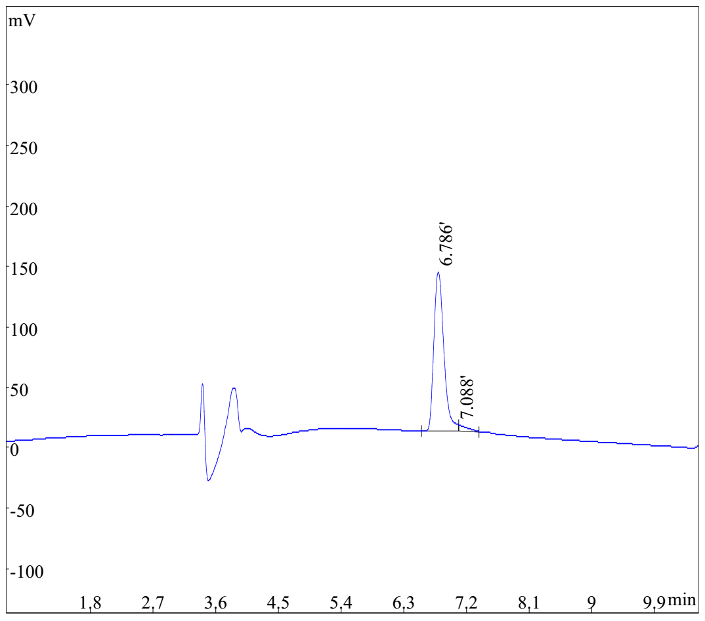
| Rank | Time | Conc. | Area |
| 1 | 6.786 | 96.84 | 1270093 |
| 2 | 7.088 | 3.163 | 41493 |
- Total: 100 1311586
MS analysis of Cyclo-(Arg-Pro)3
- Expected MS: 759.93 Mass Spectrometer: API 150EX
- Ion Source: ESI B.conc: 80%ACN/20%H2O
- NEB: 10.00 CUR: 12.00 IS: +4500 TEM: 0.00
- Flow Rate: 0.2ml/min Run Time: 1min
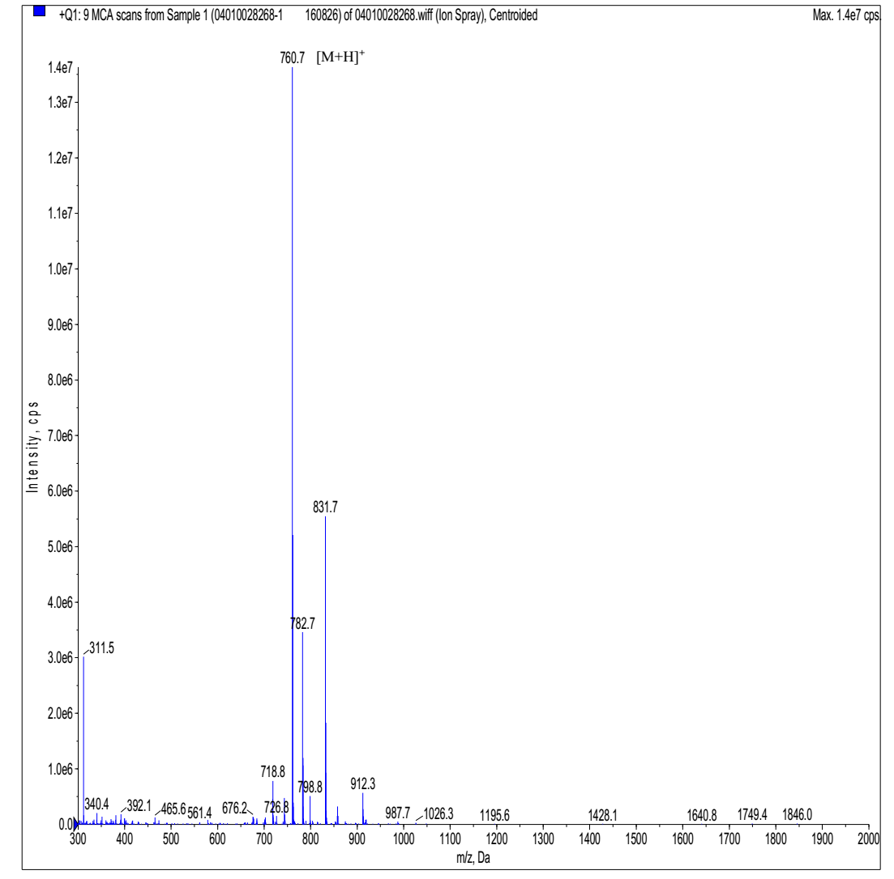
August 14th
Cyclo-(Arg-Arg) Synthesis
- Cyclo-(Arg-Arg) was purchased from ChinaPeptides Co.,Ltd.(Shanghai, China) (Received: August 29th)
HPLC analysis of Cyclo-(Arg-Arg)
- Measurement: Peak Area Run Time: 13min
- Calculation Type: Percent Wavelength : 220nm
- Flow Rate: 1ml/min Inj.Vol: 10uL
- Buffer A: 0.1% TFA in water Buffer B: 0.1%TFA in Acetonitrile
- Column: Atlantis C18,4.6mmX250mm,5 micron Column Temp: 35â„?
- Gradient(linear): 0%-20% buffer B in 13min
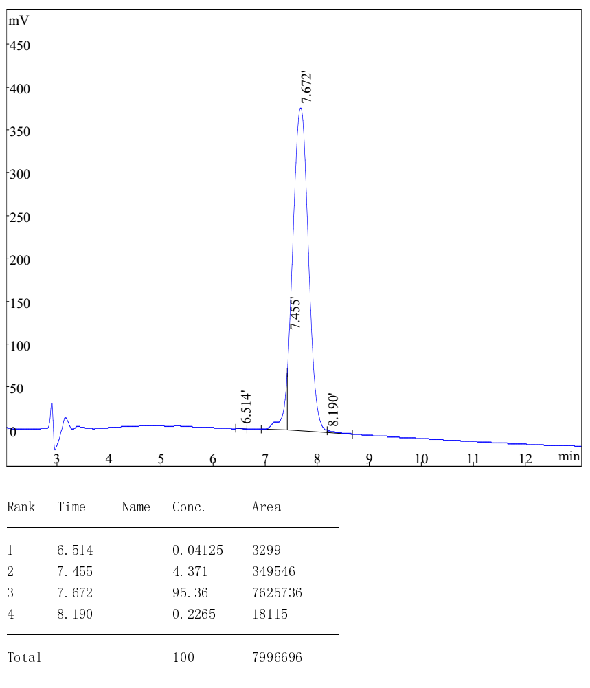
MS analysis of Cyclo-(Arg-Arg)
- Expected MS: 312.39 Mass Spectrometer: API 150EX
- Ion Source: ESI B.conc: 75%ACN/24.5%H2O/0.5%Ac
- NEB: 10.00 CUR: 12.00 IS: +4500 TEM: 0.00
- Flow Rate: 0.2ml/min Run Time: 1min
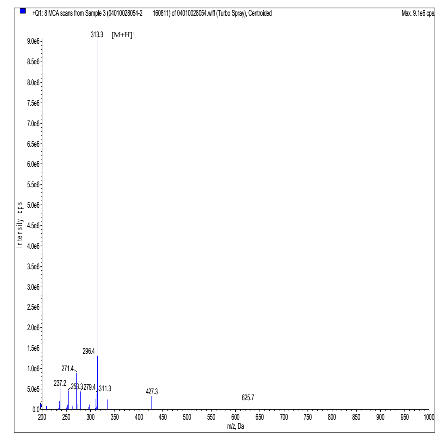
August 17th
Characterization of Cyclo-(Asp-Pro)3+ ethylenediamine
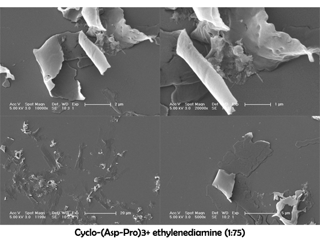
Cyclo-(Asp-Pro)3 assembling and purification
- Hexamethylendiamine as the linker (-COOH:-NH2=1:10)
- 0.5mg Cyclo-(Asp-Pro)3, 1.3704mg hexamethylendiamine, 24.542mg PyBOP, 3.27μL triethylamine and 3.841 mL DMF were added to a flask.
- The flask was sealed and the liquid was stirred for 2 days.
- Dialysis: 2 days.
- Hexamethylendiamine as the linker (-COOH:-NH2=1:50)
- 0.5mg Cyclo-(Asp-Pro)3, 6.852mg hexamethylendiamine, 122.71mg PyBOP, 3.27μL triethylamine and 0.8mL DMF were added to a flask.
- The flask was sealed and the liquid was stirred for 2 days.
- Dialysis: 2 days.
- Cyclo-(Arg-Arg) as the linker (-COOH:-CN3H4 =1:10)
- 0.5mg Cyclo-(Asp-Pro)3, 3.68mg cyclo-(Arg-Arg) and 0.8mL DMF were added to a flask.
- The flask was sealed and the liquid was stirred for 2 days.
- The assembly was not dialyzed.
- Cyclo-(Arg-Arg) as the linker (-COOH:-CN3H4 =1:50)
- 0.5mg Cyclo-(Asp-Pro)3, 0.736mg cyclo-(Arg-Arg) and 0.8mL DMF were added to a flask.
- The flask was sealed and the liquid was stirred for 2 days.
- The assembly was not dialyzed.
| Cyclo-(Asp-Pro)3 | DMF | Cyclo-(Asp-Pro)3 | Hexamethylendiamine | PyBOP | Cyclo-(Arg-Arg) | triethylamine |
| -COOH:-NH2=1:10 | 3.841mL | 0.5mg | 1.3704mg | 25.542mg | - | 3.27μL |
| -COOH:-NH2=1:50 | 6.852mg | 122.71mg | - | |||
| -COOH:-CN3H4 =1:10 | 0.8mL | - | - | 3.68mg | - | |
| -COOH:-CN3H4 =1:50 | 0.736mg |
August 19th
Cyclizing the linear peptide (D-Ala-L-Asp)3
- 3.72mg (D-Ala-L-Asp(-OtBu))3 and 1.461mg NaCl were dissolved in 1mL DMF.
- 3.1224mg PyBOP and 1.4μL Et3N were added.
August 24th
- Silylating.
- The reaction vessel was dried at 140â„?for 1.5 hours.
- 1.4023g resin was added to the reaction vessel.
- Dichloromethane was added to the resin and stood overnight.
- The resin and 1.4g Fmoc-Lys(-Boc)-OH were added to the reaction vessel.
- Dichloromethane and 33μL DIPEA were added.
- The reaction vessel was agitated for 10 minutes.
- 66μL DIPEA was added and the reaction vessel was agitated for 2 hours.
- The reaction vessel was washed with dichloromethane six times.
- 11mL blocking agent was added and the reaction vessel was agitated for 25 minutes.
- The reaction vessel was washed with dichloromethane six times.
- DEP was added to remove the Fmoc protecting group for 30 minutes.
- Resin test: Blue �
- 1.14g Fmoc-Ser(-tBu)-OH was added to the reaction vessel.
- DMF, 0.4260g HOBt, 1.56956g PyBOP and 700μL NMM were added.
- The reaction vessel was agitated.
August 25th
- The reaction vessel was washed with DMF six times.
- Resin test: Yellow �
- DEP was added and the second residue was deprotected for 30 minutes.
- Resin test: A bit blue.
- Ninhydrin was prepared.
August 26th
- The reaction vessel was silylated and was dried at 140â„?
- 0.28g 2-Chlorotrityl Chloride Resin was added and swollen in dichloromethane. .
- The resin was added to the reaction vessel.
- 0.1401g Fmoc-Lys(-Boc)-OH was added to the reaction vessel.
- Dichloromethane and 33μL DIPEA were added.
- The reaction vessel was agitated for 10 minutes.
- 66μL DIPEA was added and the reaction vessel was agitated for 2 hours.
August 27th
- A small reaction vessel was silylated and dried at 140â„?for 1.5 hours.
- 0.28g Fmoc-Lys(-Boc)-OH was added to the reaction vessel.
- Dichloromethane and 66μL DIPEA were added.
- The reaction vessel was agitated for 10 minutes.
- 132μL DIPEA was added and the reaction vessel was agitated for 2 hours.
- The reaction vessel was washed with DCM six times.
- 0.28g Fmoc-Lys(-Boc)-OH was added to the reaction vessel.
- Dichloromethane and 66μL DIPEA were added.
- The reaction vessel was agitated for 10 minutes.
- 132μL DIPEA was added and the reaction vessel was agitated for 2 hours.
- The reaction vessel was washed with DCM six times and the resin was blocked.
- The reaction vessel was washed with DMF six times.
- DEP was added and the amino residue was deprotected for 30 minutes.
- DEP was added to remove the Fmoc protecting group for 30 minutes.
- Resin test: Blue �
- 0.23g Fmoc-Ser(-tBu)-OH was added to the reaction vessel.
- DMF, 0.4260g HOBt, 0.312g PyBOP and 600μL NMM was added and the reaction vessel were agitated.
- The reaction vessel was washed with DMF six times.
- Resin test: Yellow.
August 28th
- DEP was added to remove the Fmoc protecting group for 30 minutes.
- Resin test: Blue �
- 0.28g Fmoc-Lys(-Boc)-OH was added to the reaction vessel.
- DMF, 0.085g HOBt, 0.312g PyBOP and 140μL NMM were added.
- The reaction vessel was washed with DMF six times after 90 minutes.
- Resin test: Yellow �
- DEP was added to remove the Fmoc protecting group for 30 minutes.
- Resin test: Blue �
- 0.23g Fmoc-Ser(-tBu)-OH was added to the reaction vessel.
- DMF, 0.085g HOBt, 0.312g PyBOP and 140μL NMM were added and the reaction vessel was agitated.
- The reaction vessel was washed with DMF six times.
- Resin test: Yellow �
- DEP was added to remove the Fmoc protecting group for 30 minutes.
- Resin test: Blue �
August 29th
- Assembling: [(DP)3+ hexamethylendiamine (-COOH:-NH2=1:10 & -COOH:-NH2=1:50)]assembly was dialyzed against water.
- 0.28g Fmoc-Lys(-Boc)-OH was added to the reaction vessel.
- DMF, 0.085g HOBt, 0.312g PyBOP and 140μL NMM was added.
- The reaction vessel was washed with DMF six times after 90 minutes.
August 30th
- Resin test: Yellow �
- DEP was added to remove the Fmoc protecting group for 30 minutes.
- 0.37g Fmoc-His(-Trt)-OH was added to the reaction vessel.
- DMF, 0.085g HOBt, 0.312g PyBOP and 140μL NMM was added.
- Resin test: Yellow �
August 31st
- Assembling
| Cyclo-(Arg-Pro)3 | DMF | Cyclo-(Arg-Pro)3 | Adipic acid |
| -CN3H4:-COOH=1:30 | 6.6mL | 0.5mg | 4.62mg |
| -CN3H4:-COOH=1:50 | 7.71mg |
- c(Cyclo-(RP)3)=1.5×10-4mol/L
- DEP was added and the residue was deprotected for 30 minutes.
- The reaction vessel was washed with DMF six times and the resin was tested with ninhydrin reaction: Red.
- The residue was deprotected again.
September 2nd
Characterization of Cyclo-(Asp-Pro)3+ Cyclo-RR
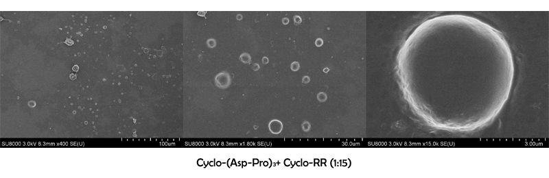
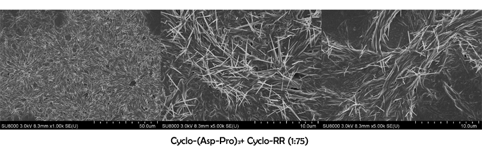
Characterization of Cyclo-(Asp-Pro)3+ hexamethylendiamine
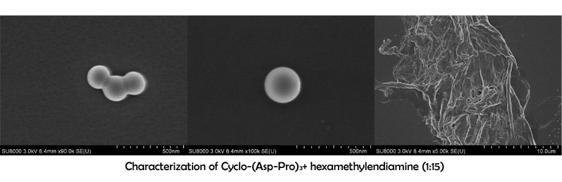
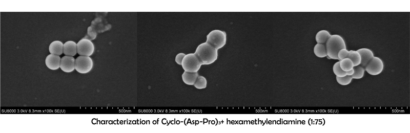
September 7th
- Assembling
| Cyclo-(Asp-Pro)3 | Cyclo-(Asp-Pro)3 | Hexamethylendiamine (-COOH:-NH2=1:50) | PyBOP | triethylamine | DMF |
| High concentration | 0.5mg | 6.852mg | 122.71mg | 2.387mg | 8.682mL |
| Low concentration | 19.21mL |
Electrophoresis
| Sample (Each+1.5μL DNA) | Sample Volume (μL) | ||
| Cyclo-(DP)3 (Covalent assembly, -COOH:-NH2=1:10) | 20 | 40 | 60 |
| Cyclo-(DP)3 (Covalent assembly, -COOH:-NH2=1:50) | 20 | 40 | 60 |
| Cyclo-(DP)3 (Electrostatic assembly, -COOH:-CN3H4 =1:10) | 20 | 40 | 60 |
| Cyclo-(DP)3 (Electrostatic assembly, -COOH:-CN3H4 =1:50) | 20 | 40 | 60 |
| DMF | 20 | 40 | 60 |
September 13th
- Two groups of cyclo-(Asp-Pro)3 assembled in September 7th were dialyzed against water.
September 14th
Electrophoresis (Reacted:13th)
| Sample (Each+1.5μL DNA) | Sample Volume (μL)(100μL system, water) | ||
| Cyclo-(RP)6+ adipic acid (-CN3H4:-COOH=1:30) | 20 | 40 | 60 |
| Cyclo-(RP)6+ adipic acid (-CN3H4:-COOH=1:50) | 20 | 40 | 60 |
| Cyclo-(DP)3 (Covalent assembly, -COOH:-NH2=1:10) | 60 | 80 | - |
| Cyclo-(DP)3 (Covalent assembly, -COOH:-NH2=1:50) | 60 | 80 | 100 |
| DMF | 20 | 40 | 60 |
Particle diameters measured with dynamic light scattering (DLS)
| Sequence number | Assembly | Diameter (nm) |
| 3 | Cyclo-(DP)3+hexamethylendiamine (-COOH:-NH2=1:50) (dilute) (Dialyzed against water) | 295.4 |
| 4 | Cyclo-(DP)3+hexamethylendiamine (-COOH:-NH2=1:50) (concentrated) (Dialyzed against water) | 342.4 |
- 24th, 26th plasmid extracting.
September 21st-22nd
| Cyclo-(Asp-Pro)3 | Cyclo-(Asp-Pro)3 | Triethylamine | PyBOP | Hexamethylendiamine in DMF(3.2mg/L) |
| -COOH:-NH2=1:0.8 | 0.5mg | 3.3μL | 2.5mg | 37.5μL |
| -COOH:-NH2=1:1.2 | 50μL |
October 4th
Assembling
- Covalent
| Cyclo-(Asp-Pro)3 | Cyclo-(Asp-Pro)3 | Triethylamine | PyBOP | Hexamethylendiamine | DMF |
| -COOH:-NH2=1:50 | 0.5mg | 2.387mg | 122.71mg | 6.852mg | 3.84mL |
| -COOH:-NH2=1:50 | - | - |
- Electrostatic
| Cyclo-(Asp-Pro)3 | Cyclo-(Asp-Pro)3 | Cyclo-(Arg-Arg) | DMF |
| -COOH:-NH2=1:10 | 0.1mg | 0.736mg | 0.77mL |
| -COOH:-NH2=1:50 | 3.68mg |
Experiment
- Cell culture and transfection
Materials
- Breast cancer MCF-7 cells
- c(PD)3 assembly (cyclo-(Asp-Pro)3 assembly, hexamethylendiamine as linker, dialyzed in water)
- LipofectAMINE 2000
- PBS
- RPMI 1640
- Serum
- RNA oligo (20μM, GenePharma)
Sequence: Sense 5�UUC UCC GAA CGU GUC ACG UTT-3�
Antisense 5�ACG UGA CAC GUU CGG AGA ATT-3�/p>
Modification: 5�FAM
October 12nd
- Breast cancer MCF-7 cells were seeded onto 24-well plates at a density of 5×105 cells per well. 500μL antibiotic-free medium was added.
October 13rd
- Breast cancer MCF-7 cells were seeded onto 24-well plates at a density of 5×105 cells per well. 500μL antibiotic-free medium was added.
- 100μL medium was discarded. 1μL LipofectAMINE 2000 reagent was mixed with 50μL serum-free RPMI 1640 medium gently and the plate was incubated for 5 min at room temperature.
- 2μL FAM-RNA oligo and 50μL serum-free RPMI 1640 medium was mixed gently.
- Diluted LipofectAMINE 2000 was mixed with diluted FAM-siRNA gently and stood for 20 min at room temperature.
- Medium was discarded. 2μL FAM-RNA oligo was mixed with 498μL serum-free RPMI 1640 medium gently and the plate was incubated for 5 min at room temperature.
- Medium was discarded. 50μL cPD3-RNA oligo-FAM assembly solution was mixed with 450μL serum-free RPMI 1640 medium gently and the plate was incubated for 5 min at room temperature.
- The mixture was then applied to the cells and the plate was agitated gently.
- The cells were cultured for 6 hours in 5% CO2 incubator at 37â„?
- The medium was removed and the wells were washed with PBS three times.
- RPMI 1640 (10% FBS) was added and the cells were cultured for 2 hours.
- Fluorescence change was examined with fluorescence microscope.
Positive Control
Negative Control
Experiment
October 15th
Transfection Result
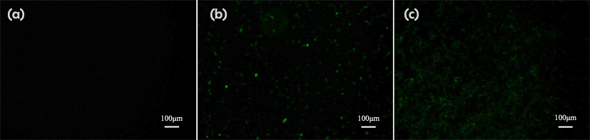
DLS Result
c(PD)3 assembly (cyclo-(Asp-Pro)3 assembly, hexamethylendiamine as linker, 50:1, dialyzed in water)
Zeta Potential
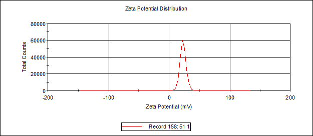
Size distribution
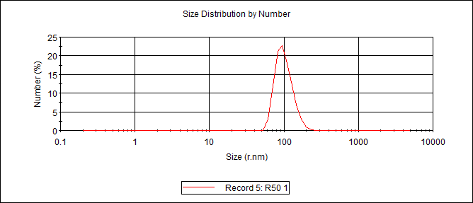
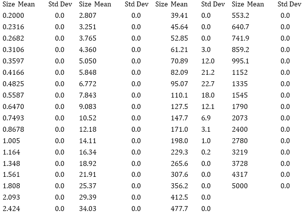
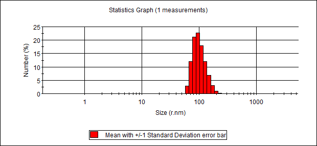